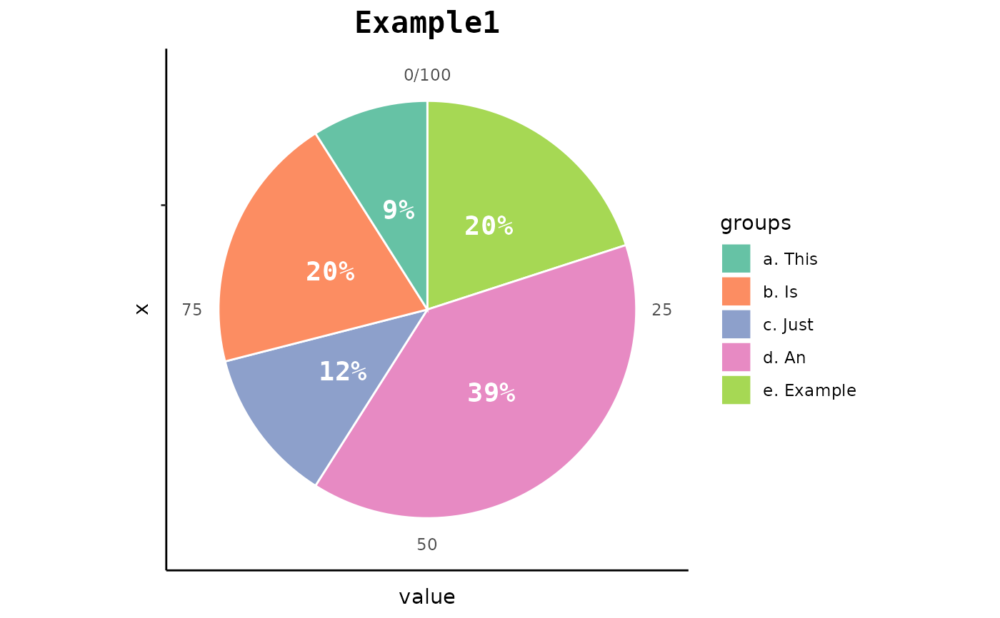

This function allows you to create cool pie charts easily by providing just
the data and a template among the available ones. Moreover, you can choose whether
to display percentages or not and also optionally specify a title for the chart
and a name for the categories.
Using this function you can create the classical pie charts (including the donut charts).
If you are looking for something more complex and extravagant (but probably less
understandable), check out the pie_bake_pro function.
pie_bake(data, template, perc = FALSE, group_name = "group", title = "")A data frame (or a tibble) with two variables (columns):
in the first one there must be the vector of labels;
in the second one there must be the vector of values.
Please note that the labels are automatically sorted in alphabetical order.
If you want to specify a particular order, it is recommended to type numbers or
letters before the category names (e.g. "a. category1", "b. category2", ...).
You can use pie_datacheck to understand if the data is suitable.
The chosen template.
Type pie_template_list to display all the available ones for this function.
A logical value. Should the proportions be displayed?
A string. If you want, you can specify a name for the categories.
A string. If you want, you can specify the title of the graph.
A ggplot object. In particular, this function returns a pie (or donut) chart according to the data, the choice of template, and the other specifications provided.
See all the available templates displayed here!
example <- data.frame(
c("a. This", "b. Is", "c. Just", "d. An", "e. Example"),
c(2.9, 6.9, 4.20, 13.12, 6.66)
)
pie_bake(
data = example,
template = "basic3",
perc = TRUE,
group_name = "groups",
title = "Example1"
)

pie_bake(
data = example,
template = "red1",
title = "Ex2"
)
pie_bake(
data = example,
template = "donut2",
perc = TRUE,
group_name = "CAT:"
)